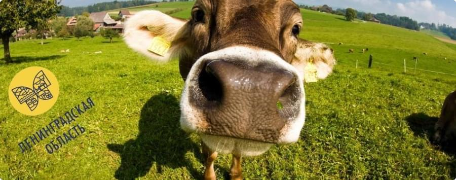

Аграрный туризм
Аграрный туризм – это достаточно новое направление для отечественной туриндустрии. Его ещё принято называть сельским, экологическим или зеленым туризмом. В настоящее время аграрный туризм активно развивается во всем мире, в том числе и в Ленинградской, Псковской, Новгородской областях, республики Карелии и др.
Свою популярность удалось снискать агротуризму в самом широком круге людей. Отдых, позволяющий жителям больших городов пожить вдали от смога и непрерывной суеты, без гула и выхлопов транспорта на многолюдных улицах, привлекает своим покоем и умиротворенностью, чистой природой и экологией. Другая причиной является поиск новых ощущений теми, кто никогда не жил в сельской местности – деревнях, посёлках, хуторах, где отсутствует промышленность, нет многоэтажной застройки.
Едут в село молодые и взрослые, едут пожилые люди, семьи с детьми. И всем найдётся занятие по душе. Это может быть восстановление физического и духовного здоровья, подкошенного городскими стрессами и другими нагрузками. Способствует такому восстановлению во многом, конечно и питание натуральными экологически чистыми продуктами, производимыми во множестве случаев сразу на месте и может сочетаться с разнообразными видами пассивного и активного отдыха.
Это может быть и изучение истории края, познание его обычаев и традиций, так долго живущих и так явно видимых в сельском населении, ещё помнящем старые обычаи. Нельзя не вспомнить о туристах, которые приезжают с целью познакомиться с местным устным народным творчеством, фольклором. Они посещают музеи, общаются со старожилами, ходят на концерты фольклорных коллективов и принимают участие в народных праздниках и фестивалях. Для многих интерес представляет организация походов и пикников, сборы грибов и ягод.
Агротуризм всё ещё сравнительно молодое направление туризма, но с каждым годом всё больше туристов обращают на него внимание, проявляют интерес к путешествию.